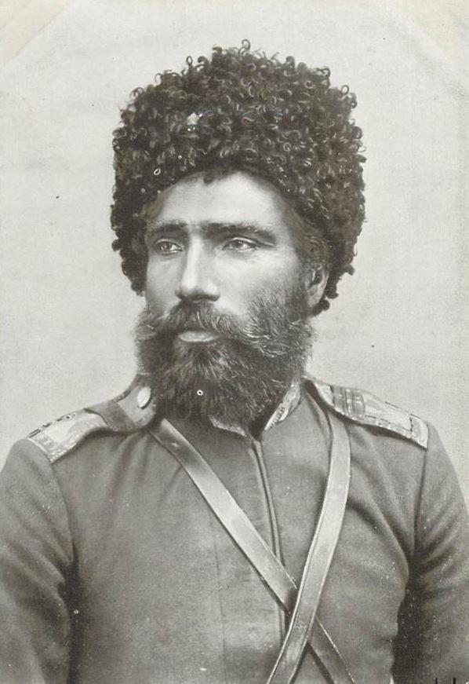
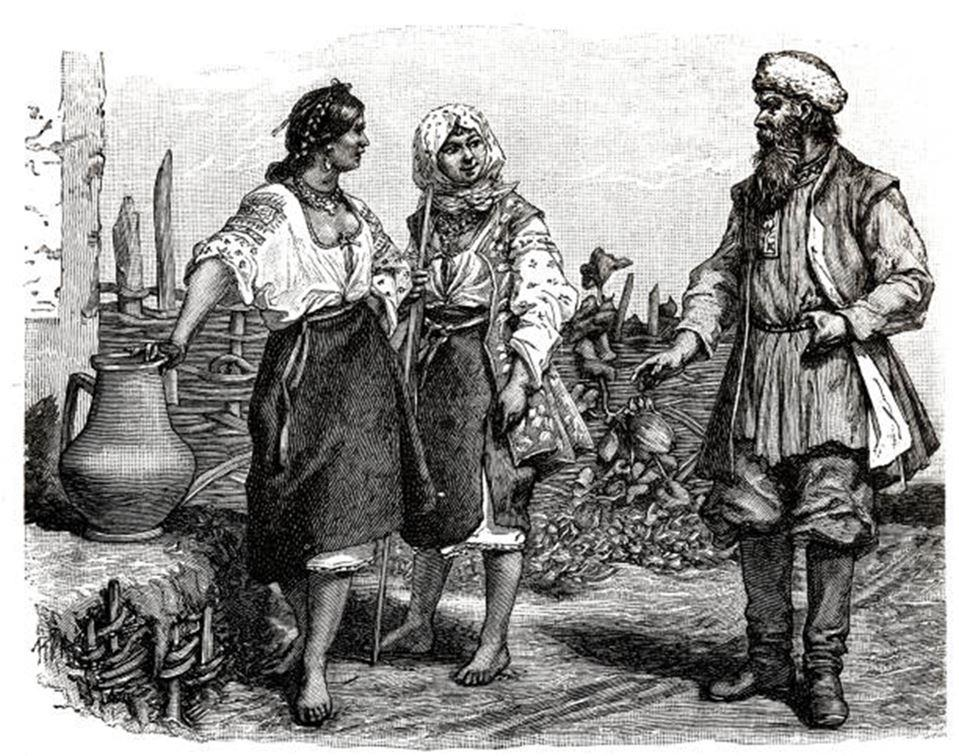
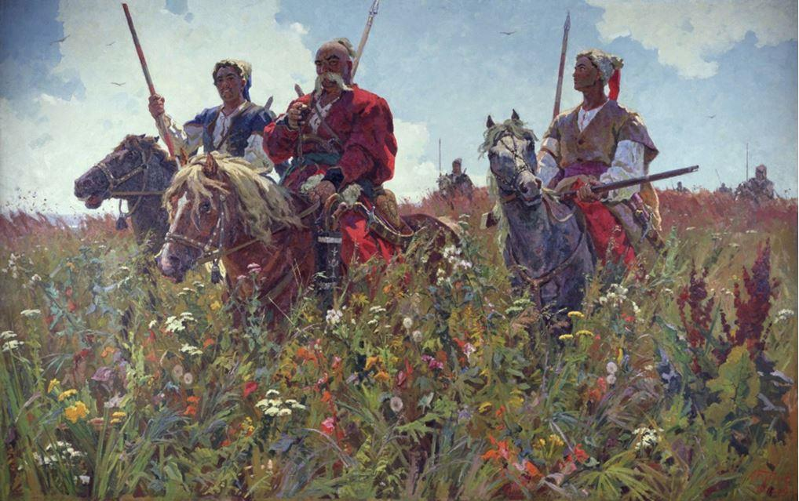

Nous sommes dans l’été : rien n’est plus chaud ni plus lourd que les mois de mai, juin, juillet et août, dans les steppes méridionales de la Russie. Septembre et octobre servent de transition à cet été brûlant. Durant ces quatre mois, l’atmosphère pèse de ses colonnes étouffantes sur la steppe de l’Oural comme l’antithèse d’un rigoureux hiver de cinq mois.
Après un court repos, les tribus militaires semblent renaître dans leurs bourgades de l’Oural, situées le long du fleuve, sur un espace d’environ huit cent verstes.
Dans les bourgs, dans les avant-postes, comme dans les redoutes, tout se met en mouvement. On dirait que le sol, devenu brûlant sous les caresses dévorantes du soleil, donne une nouvelle vie aux êtres animés. Tout le peuple s’est bientôt assemblé sur le Boudarinskaja : ce sont trois mille hommes robustes et six milles vétérans environ. Trois mille bordent le cordon intérieur et trois mille le cordon extérieur ; trois mille autres, à peu près, sans compter les travailleurs, se pressent sur le steppe nu et stérile, semblable à une mer de sable.
Chacun a, sur son chariot, son bateau ou boudarka, ses filets, et, de plus, un Kirgis vêtu de peaux de renard, comme s’il voulait faire peur à l’été. Tous se rangent en lignes, et attendent le coup de canon qui doit donner le signal du départ.
Mais où est donc Podgornoff1, ce Cosaque de Gourieff, à tête chauve, qui est toujours de service, tour à tour occupé sur le cordon, auprès des sultanes, auprès du chan, tantôt dans les régiments, tantôt sur mer près des centeniers ? Il est au premier rang des serviteurs zélés, mais il ne veut pas d’honneur : le grade d’ouriadnik lui fait peur ; car Podgornoff est pauvre et a une nombreuse famille.
Tenez, le voilà sans bonnet parmi la foule. On le reconnaît à sa tête chauve depuis les sourcils jusqu’à l’occiput, à ses lèvres pincées, à ses yeux invariablement fixés sur l’hetman2 de la pêche, qui se promène seul au milieu de la foule, comme un roi sur son territoire.
Podgornoff le tient en arrêt comme un chien couchant fait d’un buisson dans lequel s’est enfermée une gelinotte des bois. De la main droite, il manie une rêne courte ; de la gauche, il s’appuie sur la pointe de sa boudarka doublée de fer ; il attend le signal qui va être donné par un geste de l’hetman, afin de ne pas perdre une seconde pour lancer à l’eau sa boudarka, jeter ses filets et pêcher un esturgeon.
Déjà, dans l’attente de ce qui va arriver, Podgornoff sue si fort, que des gouttes d’eau perlent sur son front. Que sera-ce donc quand le travail aura commencé !
Podgornoff est toujours à l’ouvrage ; il est donc rarement chez lui. Il a refusé déjà trois fois le grade d’ouriadnik ; il veut rester simple Cosaque. L’ouriadnik est obligé d’aller là où on l’envoie, sans recevoir le moindre denier de la commune ; aucune rémunération ; pas même le remboursement de ses dépenses de tournée. Le simple Cosaque, au contraire, va selon sa volonté, et prend de la commune ce qui lui revient. De plus, il est nourri et habillé, lui et les siens, aux frais de la commune.
— Voilà notre ancien, disent les Cosaques : il fuit devant la dignité d’ouriadnik ; mais, en ce qui concerne les animaux, — c’est ainsi qu’ils appellent les poissons, — il ne s’en éloigne qu’autant qu’ils s’éloignent de lui.
Notre tête chauve n’aime pas les grillons d’eau que nous nommons écrevisses. Pour tout au monde, il ne voudrait toucher à l’un de ces animaux immondes.
Podgornoff est un Cosaque de Gourieff de très-ancienne souche. Il est de taille moyenne, trapu et large des épaules. Par trente degrés de froid, il enveloppe chacun de ses pieds dans un lambeau de toile, afin de mieux conserver sa légèreté. Durant les marches d’hiver dans le steppe, il porte un pantalon de cuir ou de toile, et, si l’ouragan neigeux devient trop mordant, il se contente de couvrir sa jambe du côté du vent avec la peau de sa courte pelisse.
Il ne craint pas le froid, car le froid fortifie. Les taons, les cousins et les mouches ne l’inquiètent pas plus que ces insectes bourdonnants ne fatiguent son cheval.
Il ne craint pas la chaleur, car la chaleur ne brise pas les os ; il ne redoute ni l’eau, ni l’humidité, ni la pluie, parce que, depuis sa jeunesse, il s’est accoutumé à un travail dont la bonne moitié au moins s’accomplit dans l’eau : la pêche.
La pêche est son métier de prédilection, et le fleuve de l’Oural a un fond d’or et une surface d’argent. L’Oural le nourrit, l’abreuve, l’habille et le chausse, et puis ne serait-ce pas un péché de se fâcher contre l’eau, qui est un don de Dieu comme le pain !
Podgornoff adore l’eau ; il l’aime à un tel point, que, lorsqu’il se trouve de service à la pêche, si l’eau-de-vie vient à manquer, il se met à boire, sans plus de façons, de l’eau de la mer.
Lui demande-t-on comment il la trouve :
— Quelque peu amère, répond-il.
Sa barbe est presque aussi chère et aussi sacrée à Podgornoff que sa tête. Sous ce rapport, notre Markian est un vrai Turc. Envoie-t-il son fils au service étranger à Moscou, il le rase, après lui avoir recommandé de laisser pousser sa barbe dans toute sa longueur au moment du retour.
Dans les chagrins, dans les maux qui le viennent frapper, le vieillard se console avec son fils, en songeant que les mères expieront leurs propres péchés.
Chez lui, jamais Podgornoff n’a chanté une chanson ; jamais il n’a raconté d’historiettes ; jamais il n’a dansé, jamais plaisanté. Bref, il n’a jamais rien fait pour faire plaisir au diable. Quant à la pipe, oh ! il n’en est pas question au logis ; il l’a encore plus en horreur que les écrevisses. On dit bien qu’il y a des employés, en nombre assez grand, qui, chez eux et à l’insu des leurs, ont une tabatière dans la poche. Nous croyons que ce ne peut être là qu’une calomnie gratuite comme il en court tant dans le monde.
Mais, une fois en campagne, c’est autre chose ! là, Podgornoff est le premier chanteur de la veillée, bien qu’il nasille un peu à la manière d’un vieux sacristain. À plus forte raison, il en est le premier danseur. Dès la troisième couchée apparaît même une balalaika3 comme si elle sortait de terre. — Tenez, voilà aussi justement des pipes et du tabac ! Mais tout cela est mis sur le compte des mères qui sont chargées de prier pour les pauvres Cosaques, et d’expier leurs péchés volontaires et involontaires.
Notre Markian comprend sous la dénomination de mères, non seulement la sienne et celle de sa femme, mais aussi sa tante, sa sœur, sa femme et sa fille ; en un mot, tout le sexe féminin.
Les Cosaques lisent toutes les anciennes Écritures, font leurs dévotions d’après les vieux livres de l’Église, s’entretiennent avec le produit de leurs ventes ; car, à l’exception du poisson et du bétail, ils ne possèdent aucune propriété et n’ont même pas de blé. Ils tissent des ceintures de soie, se font des sarafans, avec neuf boutons cabalistiques, et des chemises à manches de soie ; ils tricotent parfois des bas ; là se borne leur industrie.
La principale occupation des femmes consiste à élever les enfants dans les solides principes et les habitudes des devoirs domestiques, qui, comme nous l’avons vu, sont religieusement observés au logis ; aussi les plus minimes des détails d’intérieur sont inculqués aux filles dès leur bas âge. Mais, une fois sorties du village, ces mêmes habitudes sont négligées sans aucun scrupule. Au loin, au service ou en campagne, et surtout en dehors des limites de l’armée d’Oural, il n’y a plus de femmes !
Nous avons dit quel temps aime Podgornoff ; mais nous avons omis de parler du douran ou ouragan neigeux qui, chaque année, fait périr tant de gens et tant de bêtes.
Podgornoff ne peut pas souffrir le douran :
— C’est, dit-il, l’œuvre de Satan, qui menace de ses tourbillons et s’irrite contre la puissance divine. Aussi le douran ne peut pas être un temps. — Ce n’est pas un temps, ajoute-t-il ; cela ne vaut absolument rien. Il n’y a pas que l’homme qui devienne stupide par un semblable ouragan ; le bétail lui-même perd la raison.
Voici l’automne. L’ancien part de nouveau pour la pêche avec toute la tribu, comme s’il allait au combat. Sur le torrent étroit et rapide se pressent, d’un bord à l’autre, des milliers de boudarkas. Il n’y aurait pas de place pour une épingle, encore moins pour un filet.
Podgornoff travaille comme les autres, prend des poissons, les tue et les jette dans sa boudarka. Les marchands de Saratoff et de Moscou suivent le long des rives les pêcheurs maniant la rame, et tiennent leur argent prêt.
Il semble alors que tous ces gens-là veuillent s’entr’écraser, s’étouffer, s’étrangler. On croirait presque que pas un ne pourra survivre à cette soirée. Ce sont des cris, un vacarme, des injures, des coups de poing, un charivari, une mêlée effroyable, une presse sur l’eau comme dans une lutte générale au pugilat. Ils se poussent et se heurtent au point que les boudarkas craquent de toute part. Les Cosaques, qui s’y tiennent debout, se rangent des deux côtés et les font tanguer de telle sorte, que leur avant plonge presque dans l’eau. « Oh ! mon Dieu ! ils vont tous se noyer ; ils s’entre-tuent ! » Rien de tout cela : ils se quittent frais et bien portants pour recommencer le lendemain les mêmes tours d’adresse sur un autre point désigné par le signal du canon.
Et les choses continuent ainsi en descendant le torrent jusqu’à la stanitza de Kalenoff.
Podgornoff rame de toutes ses forces comme s’il était possédé du démon. Il rame vigoureusement avec une petite rame qui lui sert en même temps de gouvernail, et à l’aide de laquelle il se fraye un passage à travers la masse serrée des boudarkas, lesquelles se garent à droite et à gauche comme elles peuvent, et sans qu’il s’occupe le moins du monde de ce qu’elles peuvent devenir.
Il amène ensuite son filet et tire le poisson. Il est lui-même poussé de l’avant, de l’arrière et de tout bord ; cela l’inquiète peu ; il crie et il jure, voilà tout ; et, comme il sait que personne ne l’écoute, que chacun est occupé de son travail, il se contente de continuer le sien, et soulage l’irritation de son cœur en l’épanchant en injures.
Du reste, Podgornoff n’emploie pas pour exhaler sa bile les fines invectives russes, si l’on peut nommer ainsi la fleur des jurons choisis ; il ne se les permet qu’en campagne.
Enfin, voici le rigoureux hiver ! L’Oural est gelé ; la steppe, dont l’étendue échappe au regard, ressemble à une mer de neige. Les Kirgis, gelés et affamés, restent pacifiquement et doucement assis dans leurs huttes d’hiver, et ne songent point à s’approcher des piquets ni à se glisser çà et là, à la faveur de l’ombre épaisse des nuits, pour faire une razzia sur le bétail ou sur les bandes de chevaux. Le sang paraît même s’être refroidi chez ces sauvages.
Podgornoff, lui, ne sacrifie pas à la paresse ; il s’apprête, il s’arme de nouveau pour aller à la pêche au harpon. Le voilà déjà près de la ville de l’Oural, où toute la troupe s’est rassemblée. À peine le coup de canon a-t-il retenti, que, de la rive, il s’élance en courant sur la glace comme un possédé, ne se ménageant pas plus qu’il n’épargne les autres, perce en trois coups de sa perche acérée la glace épaisse de plus d’un demi-mètre, laisse tomber dans quelque trou profond son hameçon noué à une ligne de six brasses et dont l’extrémité supérieure, se repliant sur son épaule, traîne derrière lui sur la glace ; il prend un poisson, le perce encore d’un harpon plus petit et crie à tue-tête :
— Holà ! frères, je ne puis tirer ce lourd fardeau, les forces me manquent.
Il crie ainsi des heures entières, et, à chaque prise, les exclamations redoublent, bien qu’il sache parfaitement que personne ne viendra à son aide, faute de temps, de même qu’il ne pourrait porter secours à son voisin. Il crie donc de toutes ses forces, et, bien qu’on soit en plein hiver et qu’il n’ait pour unique vêtement qu’une chemise, ses efforts, la violente tension de ses muscles, ses mouvements des pieds, des mains et de la tête, ses contorsions le mettent en nage ; il est mouillé des pieds à la tête. Il plonge à trois reprises, et ramène son butin sur le rivage.
Si Podgornoff s’est ainsi plongé dans l’eau, c’est que, des milliers de pêcheurs ayant sauté ensemble sur la glace dans un endroit où l’eau était peu profonde, la glace a été brisée sous leurs pieds en moins d’un quart d’heure ; les poissons tués ont couvert la surface du fleuve et il a fallu se mettre à leur poursuite. Podgornoff a choisi et retenu pour lui un petit glaçon. C’est sur ce petit glaçon qu’il a placé trois ou quatre poissons d’une valeur de cent à cent cinquante roubles. Appuyé sur son crochet de pêche, qui ploie dans ses mains comme une corde, il retient de ses pieds le glaçon et se dirige vers le bord, tenant le petit harpon de pêche entre ses dents. À peine débarqué, il livre sa marchandise et reçoit son argent. Le glaçon a bien tourné deux ou trois fois sous ses pieds, mais notre Markian n’a pas accordé la moindre attention à cet incident. Il ne s’est occupé que du sort de ses poissons, qu’il avait amarrés au moyen d’une corde ou de sa ceinture, tandis qu’il tenait dans ses mains ses ustensiles de pêche.
Mais voici le joyeux printemps. La débâcle du fleuve commence ; la glace se met en mouvement de toute part ; l’eau monte dans le fleuve et déborde. Les canards et les oies sauvages suivis des grues se dirigent par bandes nombreuses vers le Nord. C’est le moment où Podgornoff répare sa boudarka, et raccommode ses filets : puis il se traîne à quatre verstes environ dans l’intérieur du pays, en amont du torrent, pour revenir ensuite au logis, en laissant aller sa boudarka au gré du courant.
Pendant la route, si, de l’œil gauche, il vise une bande de cygnes rasant la terre de leurs ailes déployées, et, si on lui demande par quelle raison cet oiseau quitte le lieu de sa demeure, il répond sans hésiter :
— Cette bête n’a pas de raison ; elle obéit à son instinct.
En voyage, Podgornoff interroge tout le monde ; il demande aux Cosaques des avant-postes, à l’inspecteur des eaux et forêts, « si les poissons se sont bien couchés pour le sommeil de l’hiver, et si la prise sera abondante. » Mais, quand il se trouve sur le chemin qui conduit au fleuve, il vole, il vole, parce qu’il se sent attiré. Le nez sur l’eau, il considère l’Oural ; il se place comme s’il écoutait, et, de temps en temps, il s’essuie la bouche.
Si l’on a vu quelquefois un chasseur passionné qui se rend à l’affût avec son chien et son fusil, ne se connaissant plus dès que quelqu’un vient à parler de chasse en sa présence, on pourra alors se faire une idée de Podgornoff, le pêcheur de l’Oural. Ses yeux gris lancent des flammes dès qu’on parle de pêcheurs, de pêche et de poissons. Ses sourcils s’agitent violemment, son front large rayonne, ses lèvres se roidissent. Markian jetterait par terre d’un bras vigoureux le premier Kirgis qui oserait conduire son bétail, pour l’abreuver sur les bords de l’Oural, tandis que le poisson monte.
— Le poisson est aussi un animal, dit le vieillard avec indignation. Il craint le bruit et les hommes. Une fois parti, il est bien parti ; où ira-t-on le chercher après ?
Au surplus, notre Cosaque n’a pas tué que du poisson durant sa vie. Sans parler de ses campagnes et de ses fréquents combats contre les Kirgis, il a, dans ses jeunes années, abattu beaucoup de sangliers dans les joncs, près de Gourieff, et, plus tard, quand les sangliers abandonnèrent cet endroit, il alla leur livrer bataille près de la Prokva et à l’embouchure de l’Emba. Une fois, entre autres, un sanglier a renversé son cheval, et il est malheureusement tombé sous la bête.
Une des particularités les plus remarquables de la vie de Podgornoff, c’est qu’allant une fois chasser le sanglier, il rencontra un ours. Par un beau clair de lune, le soir de la veille d’une fête, Markian s’était mis en route dans sa boudarka, contrairement aux prescriptions religieuses ; parvenu à environ quinze werstes de Gourieff, du côté de l’embouchure du fleuve, il s’y était préparé un gîte pour la nuit, dans un lieu épais, près d’une place battue par les sangliers. Il était là depuis quelques heures à peine, lorsqu’il entendit un bruissement dans le fourré ; puis les joncs s’écartèrent. « La bête va paraître, » pensa Podgornoff ; et il arma le chien de son arquebuse. Cependant la bête ne paraissait point ; mais on entendait de tout côté le craquement des joncs. Ce craquement s’accrut, de minute en en minute, d’une telle force, que les cheveux se dressèrent d’épouvante sur la tête du pauvre chasseur. Il hasarda un œil, puis l’autre ; il regarda tout autour de lui et ne vit rien. Le jonc craquetait toujours néanmoins, comme si une bande entière de sangliers en froissait les tiges en les courbant.
Podgornoff se releva, et fit quelques pas en arrière vers son point de refuge, la boudarka. Qu’aperçut-il en ce moment devant lui ? Un ours aux soies flottantes se tenait, à quelques pas de là, immobile, sur la pointe du monticule.
— Autant que je puis me le rappeler, dit le vieillard, c’était une femelle ; elle était jeune ; d’une patte, elle me faisait signe d’approcher.
C’était fantastique ! Markian eut peur, — on aurait eu peur à moins ; — il fit le signe de la croix, se retira vivement dans sa forteresse flottante, saisit la rame en se jetant à genoux, mit le cap de sa boudarka vers la route qu’il avait parcourue, et, de son élan le plus rapide, s’en retourna vers la maison.
Tout le monde reconnaissait Podgornoff pour un brave homme qui, malgré sa pauvreté (et elle était extrême), venait au secours d’un grand nombre de ses camarades en proie à des besoins plus grands que les siens. Il donnait volontiers à de plus pauvres que lui. Un jour, il tomba malade de désespoir, à l’idée de tuer un vieux chien qu’il avait gardé pendant dix ans et qui devenait boiteux.
— Il mangera le pain de la retraite, disait le vieillard ; une bouche de plus ne nous appauvrira pas davantage.
Mais, si, faisant partie d’un convoi d’hiver, à travers la steppe, on vient à capturer une couple de chameaux chargés, et qu’il entende dans les bagages quelques cris importuns, il vous jette sans façon deux enfants nus dans la neige sans même retourner sa tête :
— Cela ne fait rien, Excellence, répondait-il à l’officier qui lui reprochait sa conduite inhumaine à ce sujet ; cela ne fait rien : ils sont endormis. Et puis dois-je donc traîner avec moi des nourrices pour ces jeunes chiens ? se dit-il en lui-même en souriant. J’ai, sur ma foi, déjà bien assez des miens, qui meurent peut-être de faim au logis ; car le blé coûte maintenant un rouble et six grivna le poude4.
En campagne, Podgornoff ne s’inquiétait ni de la chaleur, ni du froid, ni de la soif, ni de la faim.
— Il faut surmonter ces misères-là, avait-il coutume de dire ; je m’y suis habitué peu à peu. Il n’y a que pour mon cheval que je souffre, quand il n’a pas de foin. À l’homme, les privations ne font aucun mal.
De toutes les armes des Cosaques, le sabre est celle que Markian peut le moins supporter. Il l’appelle le parasite à cause des soins qu’exige son entretien. Selon lui, le sabre est d’une médiocre utilité. L’arquebuse rayée avec laquelle il tire debout ou étendu sur la terre, et sa longue lance, voilà les vraies armes d’un Cosaque ; les armes qu’il aime et sur lesquelles il place toute sa confiance.
Podgornoff n’a jamais pris part à une attaque régulière de cavalerie :
— Cela ne s’est pas trouvé, dit-il, et cette sorte d’attaque n’est pas commode pour nous.
Mais les cris, le vacarme, les surprises par derrière dans les embuscades, voilà le genre de combat où il excellait ! Alors que les rangs deviennent plus faibles et que l’on peut les enfoncer, on poursuit l’ennemi à outrance et l’on ne fait de quartier à personne.
— Si l’ennemi prend la fuite, avait-il coutume d’ajouter, il ne faut pas cesser de le piquer, à moins qu’il ne se cache sous terre. Envoie-le à Satan, tandis qu’il se hâte dans sa fuite, avant qu’il se retourne. Remarque que tu es seul à sa poursuite ; pique dans les rangs à coups redoublés pendant sa course folle, car, s’il réfléchit et vient à s’arrêter, il peut facilement se mettre en défense, et alors toute ta peine est perdue.
Le vieillard aimait son arme rayée ; c’était une vieille affection qui remontait à ses premiers essais de chasse ou de guerre. Dès sa jeunesse, elle lui avait servi à tuer des oies, des cygnes, des canards, des chèvres et des renards du steppe, des sangliers et d’autres bêtes : il tuait indifféremment tout cela avec la balle, quelle que fût la différence de plumage ou de taille, se servant de sa chère arquebuse. Quant à la carabine, il ne la pouvait souffrir ; il avait sur cette arme des idées étranges et une opinion bien arrêtée.
Quinze jours ou trois semaines suffisent à Podgornoff pour dompter, dresser et rendre docile comme un mouton le cheval le plus rétif. Que l’animal lance des ruades de devant ou de derrière, la chose ne l’inquiète nullement. Il ne serre jamais la sangle, il regarde le knout comme le meilleur instituteur. Sans cet instrument universel, le moindre brin de science, selon lui, ne peut entrer dans aucune cervelle, pas plus dans celle d’un homme que dans celle d’un animal. Il appelle le cheval, s’approche de lui, le caresse, le prend par les oreilles, le flatte de la main, de la voix et du regard. Il le fait tenir par un de ses fils ou par son neveu, et alors la chose va son train. Le cheval peut gesticuler tant qu’il lui plaît, lancer des ruades ou se lever sur ses pieds droits comme un arbre, il faut bien qu’il finisse par s’accoutumer au cavalier, et qu’il s’apprivoise bon gré mal gré.
Le cheval des Kirgis est un peu plus difficile à dresser ; mais son éducation ne tire pas non plus à conséquence. Au commencement, on va de côté, à la corde, comme on peut. S’habitue-t-on peu à peu à ces manœuvres, alors viennent les courroies et les perches. Mais le fouet, oh ! le fouet est le plus naturel et le plus efficace des moyens d’enseignement.
Ce n’est pas seulement à cheval et sur l’eau douce, mais aussi sur la mer que Podgornoff se trouve comme chez lui. La mer le connaît de longue date ; il a été sur plusieurs navires, non-seulement de Gourieff à Astrakan, mais à travers de plus grandes distances. Il est allé à Kolpin, voire même plus loin. Il était aussi à la pêche maritime près de Kourchaï, à la vérité, en nombreuse compagnie ; car, seul, il trouve cette sorte de pêche trop accablante. Tipp-Karogan, Mangischlak et Kaidal l’ont vu à leur tour ; mais ces excursions avaient exclusivement pour but des affaires de service.
Lorsqu’il était plus jeune, il allait bien sur la mer dans sa boudarka, laquelle roulait doucement, balancée sur l’onde, tandis que son maître la dirigeait vers les endroits où se tenaient les cygnes. Il faisait commerce de leurs plumes, de leur peau et de leur duvet ; mais cette profession assez lucrative, il se l’est interdite depuis longtemps, comme trop périlleuse. C’était bon dans la jeunesse, âge de la témérité et de la force ; mais la force et la témérité manquent au vieux chasseur.
Podgornoff a su, presque aussi bien qu’un pilote, ce que c’est que le sud-ouest et le nord-est, hune, grot, drisse de perroquet et autres expressions de loup de mer. Markian était, sans s’en douter, un marin fini ; il savait louvoyer et combattre en maître contre le vent et contre l’ouragan, comme si la mer était son propre élément ; et il ferait encore, dans un cas pressant, ce rude métier.
— Parce que, dit-il, je m’y suis rompu dans mon adolescence ; la mer était ma voisine et tout à fait sous ma main.
Il s’est aussi trouvé à la pêche, pendant l’hiver, sur les banquises de la mer ; il est resté, jusqu’à quinze jours entiers, sur les glaçons flottants. Pendant ce temps, les vagues et la tempête enlevaient continuellement des morceaux de son glaçon, de telle sorte que Podgornoff voyait, je ne dis pas chaque jour, mais à chaque heure, la froide mort sous ses pieds. Mais le Seigneur est miséricordieux : le glaçon et le Cosaque, l’un portant l’autre, étaient poussés à la côte. Si le dernier avait raison de se lamenter, c’était d’avoir perdu tous ses engins de pêche, et d’être obligé de rentrer au logis, les mains vides. Quand même le glaçon n’aurait pas doucement déposé notre Cosaque sur le rivage, il se serait probablement tiré d’affaire ; car il arrive à quelques-uns de se sauver à la nage et d’aborder la rive, non plus, cette fois, en s’aidant des débris de glaçons dispersés çà et là par l’ouragan, mais tout simplement en traîneau sur les vagues qui se dirigent vers la terre.
C’est, du moins, de cette manière que se sauva, il n’y pas longtemps, un camarade de Podgornoff, le Cosaque Dervinoff, qui avait aussi passé quelques semaines sur un glaçon. Après avoir été obligé par la faim de dévorer son cheval jusqu’au dernier morceau, Dervinoff, qui avait l’esprit inventif, fit une outre de la peau de la bête ; il l’attacha à la barre de son traîneau, la gonfla, prit une perche pour s’en servir comme d’une rame, fit une voile de son long caftan ; et c’est à l’aide de ce vaisseau d’un nouveau genre que, seul de tous les pêcheurs sortis d’Astrakan, Dervinoff parvint à regagner ses foyers5.
Podgornoff a pris, dans sa vie, beaucoup de truites ; il a préparé énormément de kaviar et vendu sur place ces produits aux marchands de Moscou et de Peter6 : c’est ainsi qu’il appelle la nouvelle capitale de la Russie. Parmi les poissons pris par lui, quelques-uns ont eu l’honneur insigne de paraître sur la table du tzar, et cela, quand le tour du vieux Cosaque était venu de faire partie du harponnage de l’empereur, d’où provient annuellement, selon une vieille coutume, le morceau du tzar, ou la soi-disant prise du tzar, morceau de lion et royalement taillé ; car il ne faut pas moins pour le transporter que plusieurs chariots attelés chacun de trois chevaux.
Dans tout le cours de sa longue carrière, Markian n’a pas goûté une seule fois à un esturgeon ni à tout autre poisson de qualité.
— Ces marchandises sont trop chères et ne sont pas pour mon bec, comme dit l’ancien.
Dans l’été seulement, notre homme se régalait de truites, après la campagne de Boudarinskaja, alors qu’il était à la mer avec les centeniers de Gourieff et le jessaoul (surveillant qui a rang d’officier parmi les Cosaques) chargé de veiller sur les eaux de la troupe, dans la crainte que les habitants d’Astrakan n’y mêlent quelque drogue malfaisante. Alors le poisson avait beau jeu ; on n’en vendait point, la vente étant expressément interdite ; mais les Cosaques en mangeaient à leur volonté ou, pour dire plus juste, à satiété.
Quand la pêche était finie, la femme de Podgornoff faisait quelquefois cuire au logis un peu de menu poisson. À l’occasion, on tuait aussi un agneau ou on mangeait du kaïmak (lait bouilli ; les Cosaques ne prennent jamais de lait froid).
Comme les jeûnes sont scrupuleusement observés, on mangeait, pendant environ six mois, du gruau et de la choucroute, sans assaisonnement, sans y ajouter le moindre ingrédient étranger.
Allait-on en campagne, la femme de Podgornoff préparait force cocouques, sorte de pain blanc ou de gâteau dans lequel on a battu un œuf, afin qu’il se maintienne plus ferme et meilleur, et elle en pourvoyait son mari pour la route ; elle lui en fournissait autant qu’il en pouvait suspendre aux courroies de sa selle.
En homme d’expérience et d’un esprit bien tourné, Markian ne pouvait jamais se résoudre à partager un plat quelconque avec un Kirgis ou un Kalmouck, ni même avec un chien ; mais il ne dédaignait pas autant un Russe, et il lui faisait l’honneur de le prendre pour un homme, bien que d’une espèce infiniment inférieure à la sienne. En conséquence, il était disposé à manger avec lui au même plat, à boire à la même écuelle, soit en campagne, où tout est permis et où les distances sociales s’effacent, soit au logis, quoique, sous ce rapport, sa femme eût une opinion différente et d’autres principes. Pour rien au monde, elle n’aurait voulu recevoir de personne un payement en argent, en échange des mets ou de la boisson qu’elle offrait ; elle aurait considéré cela comme un péché mortel. Mais aussi, pour rien au monde, elle n’aurait voulu prêter sa vaisselle à un de ces museaux pelés ; car elle croyait fermement qu’on ne pouvait manger au même plat avec un chien, avec un Tartare infidèle ou un menton rasé.
Son mari n’osait pas lui résister ni discuter avec elle sur ce point, parce qu’il s’en serait mal tiré : elle lui aurait servi à lui-même, comme à un homme impur, sa soupe aux choux dans un tesson, ainsi qu’elle avait coutume de le faire, quand il revenait de campagne, jusqu’à ce que les siens eussent fait les prières de purification voulues dans l’intérêt de son âme et à l’intention des milliers de péchés commis par lui durant l’expédition.
Il arriva, un jour, que Podgornoff, recevant un digne convive qu’il ne voulait aucunement mortifier, prit le samovar et mit sur la table la théière et les tasses ; sa femme n’était pas au logis pour le moment. Eh bien, à raison de cette équipée, l’ancien put à grande peine parvenir à la calmer et eut beaucoup à faire pour la ramener à la bonté naturelle de son caractère.
Même, dans ce cas, où elle était blessée dans son orgueil et dans ses sentiments, elle refusa de recevoir de son hôte aucune sorte de payement, ni pour le boire, ni pour le manger ; mais elle exigea sans façon du voyageur un grivennik d’argent (pièce de monnaie de dix coppeks). Certes, elle ne reçut pas la pièce elle-même, afin que personne ne considérât le fait comme la solde d’une note de dépenses : une main tierce reçut la gratification ; puis elle fit enlever les tasses et la vaisselle par une tierce personne, vieille demoiselle qui se chargeait volontiers de ces sortes de purifications, et qui rendit à ces objets la pureté que leur avait fait perdre un contact impur. Cet acte nécessaire causa beaucoup d’embarras dans la maison ; car, ne pouvant s’accomplir sur les lieux mêmes, toute la vaisselle fut portée au fleuve, y fut lavée, rincée, longuement essuyée, et ne rentra au logis qu’après les prières d’usage.
Les fils de Podgornoff sont d’une haute stature, sveltes, minces de taille et forts comme leur père. En général, les jeunes gens de l’Oural sont un peu plus forts que les auteurs de leurs jours. C’est une preuve que la race ne dégénère point. Ils sont pour la plupart très-vigoureux. Ils ont crû de toutes les manières ; et de même, dans le passé, ont crû leurs pères, et, dans des temps plus reculés encore, leurs grands-pères et leurs arrière-grands-pères. Il n’y a rien de changé dans la loi progressive.
Quand Markian avait dix ans, il gardait les troupeaux de chevaux, allait à la pêche avec son père, arborait sur son traîneau ou sur sa voiture un signe quelconque, un chiffon, un bonnet ou une botte ; puis il se rendait le long de la rive avec mille autres traîneaux ou charrettes, tandis que son père était occupé sur l’eau et criait à tue-tête toute la journée. Le soir, il arrivait que, dans le tintamarre général, les pêcheurs ne pouvaient pas retrouver leurs voitures. On s’appelait alors de tout côté, et des bords du fleuve et du haut des voitures. Cet exercice donnait à l’ouïe une extrême finesse, à la vue une grande perspicacité, de telle sorte que Podgornoff, avec ses yeux gris, voyait très-distinctement les objets à une distance considérable, là où tout autre n’aurait vu que le ciel et la terre. Alors, si Markian venait à jeter un nom à l’écho, « on entrevoyait quelque chose qui luit » dans un endroit lointain où le premier venu n’aurait pu voir qu’à l’aide d’une lunette d’approche.
Aussi, sur la mer, il avait l’habitude de déterminer le point le plus éloigné de l’horizon par la seule puissance de son regard ; et, quand le rivage se perdait dans la brume, s’il ne pouvait plus voir c’est uniquement parce qu’il était sous l’horizon, et qu’aucune lunette n’aurait pu faire découvrir à un œil humain le point qui venait de disparaître.
Podgornoff n’a jamais appris ni à lire ni à écrire ; à la vérité, c’est faute de temps. Il est toujours en service ou continuellement préoccupé de travail. Il n’a que faire de mordre au syllabaire ; c’est l’usage des mères de le démontrer à leurs enfants : ne sont-elles pas obligées de prier pour expier les péchés volontaires et involontaires de leur mari, de leur père, de leurs fils, et de leurs frères ? Les mères restent tranquillement assises au coin du feu et n’ont rien à faire que d’observer et de perpétuer les anciens usages et coutumes, et de pourvoir, d’après les traditions cosaques, à l’accomplissement des devoirs spirituels, autant pour elles que pour tous les membres de leur famille. Elles peuvent bien prier pour les pauvres Cosaques chargés du soin de leur fournir le pain quotidien, d’exercer les professions actives et de s’acquitter de toutes les obligations du service.
Chez les Cosaques de l’Oural, le bétail est toujours à la pâture, en été, en hiver, enfin pendant toute l’année. Que le temps soit bon ou mauvais, les bergers le suivent, défiant tour à tour et selon la saison, l’ouragan, la pluie, la chaleur et le froid.
Ce n’est pas avec la corne et le chalumeau que le pâtre de l’Oural conduit son bétail au pâturage. Il le mène l’arquebuse rayée sur l’épaule, la pique à la main et toujours à cheval. Il est bien rare de voir dans cette contrée quelqu’un aller sans armes d’une bourgade à l’autre. Le paysan même qui sert de postillon est assis sur le siége de la voiture avec un fusil et une cartouchière à ses côtés. Il ne faut donc pas s’étonner que Podgornoff, depuis sa plus tendre enfance, ou au moins depuis l’âge de douze ans, se soit servi de l’arquebuse. Dans les passages dangereux, même sans attendre le commandement, il ne manque jamais d’enlever le chiffon qui enveloppe le chien ; il examine la batterie, la munit de la pierre et arme le chien. Dès qu’il approche de la stanitza, il recouvre la batterie avec un morceau de peau de brebis, met le chien au repos et examine avec soin s’il n’est point tombé de poudre du bassinet, dans lequel il ramène scrupuleusement jusqu’au plus petit grain qui tend à s’échapper.
Il est arrivé très-souvent aussi à Markian de se passer de nourriture pendant des journées entières. À ces rudes épreuves il était fait dès son enfance ; tout petit, il ne mangeait pas toujours. Dans l’été, il supportait la faim en suant ; dans l’hiver, il jeûnait en grelottant et battait la semelle, pour faire passer les heures, tout en jurant un peu pour se distraire. En été, il étanchait sa soif en mâchant une balle de plomb ou un peu de paille ; cela rafraîchit. L’hiver lui fournissait de la neige. En toute saison, le bois de réglisse, les hérissons, les œufs d’hirondelle de mer, même le pain de terre (espèce de lichen extrêmement nutritif, mais d’un goût détestable et qui sent le moisi) et une grande quantité d’autres végétaux mangeables, l’aidaient à satisfaire tour à tour les caprices impérieux de son appétit, constamment surexcité par les fatigues et par le jeûne ; il variait ces mets, peu succulents sans doute, mais leur variété même les lui faisait trouver moins mauvais.
Enfin, arrivait le moment où les vivres ne manquaient plus. Markian mangeait alors pour le passé et pour l’avenir.
— Bonne ou mauvaise, disette ou abondance, chaque chose a son temps, avait coutume de dire notre Cosaque.
Pour toutes les richesses de la terre, Podgornoff n’aurait voulu manger de la chair de cheval ou de chameau.
— Plutôt mourir que de me rendre coupable d’un tel péché !
Comme tous les orthodoxes russes, Markian portait les cheveux taillés en rond. Quand il se rendait avec les Cosaques à quelque service extérieur, il se coupait les cheveux à leur manière. Il était sûr ainsi d’être toujours selon la mode. À Oural, il portait également un caftan court, espèce de robe de chambre piquée et rayée, et se ceignait les flancs d’une kulta-kirgis, c’est-à-dire d’une courroie de cuir ayant sur les côtés une poche et un fourreau pour le couteau.
Les jours de fête, il se pavanait dans une jaquette ronde bordée de velours ; en hiver, il se couvrait d’un bonnet de peau noire très-haut de forme ; en été, d’une casquette d’un bleu sombre, avec une garniture bleu clair et une visière de cuir. Sur la chemise, il portait toujours une étroite ceinture nattée, ce qui était à ses yeux une circonstance particulièrement importante, car aller en chemise sans ceinture ne pouvait être le fait que d’un Tartare.
La femme de Podgornoff avait aussi grand soin de mettre la ceinture à ses enfants, et elle les corrigeait vertement si l’un d’eux venait à la délier ou à la perdre ; car, dans l’autre monde, selon la croyance, c’est au moyen de cette ceinture qu’on pourra distinguer les enfants orthodoxes des enfants non baptisés des Tartares, et, quand ils se promèneront dans les vastes et merveilleux jardins célestes, où ils ont la mission de cueillir des raisins, ils pourront les garder sous la chemise contre leurs poitrines, tandis que les Tartares ne peuvent les cacher nulle part.
À son logis d’Oural, Podgornoff ne faisait jamais de serment ; il se contentait de dire : « Oui, oui, » ou : « Non, non. »
— Ce qui est de plus est soufflé par le malin, ajoutait-il.
Il ne disait jamais : « Je vous remercie, » mais seulement : « Que le Christ t’assiste ! » Entrait-il dans une chambre, il s’arrêtait d’abord sur le seuil en murmurant ces mots : « Seigneur Jésus-Christ, fils de Dieu, ayez pitié de nous tous ! » et il attendait la réponse ordinaire, amen ! pour pénétrer dans l’intérieur de la chambre et faire ses salutations et ses compliments à la personne qui s’y trouvait.
Il n’allait jamais à l’église autrement qu’en caftan ouvert et la ceinture serrée sur la chemise. Prenant part avec zèle à toutes les affaires de la commune, il avait fait vœu d’aller prier avec la plus grande ferveur dans l’église orthodoxe, aussitôt que l’on confierait à la troupe la défense de la rive gauche de l’Oural, et que l’on mettrait le côté de la mer à l’abri de toute attaque de la part des Astrakaniens.
La piété, on le sait, est le partage des âmes orthodoxes, et Podgornoff était pieux, quoique jurant à tout propos, et fort disposé à la colère.
Ainsi grandit et vécut Podgornoff ; ainsi il devint vieux, blanc de cheveux, ou gris du moins, quoiqu’il eût à peine dépassé l’âge de cinquante ans. À dix-huit ans, il était déjà enrôlé parmi les Cosaques. Il était donc maintenant dans sa trente-quatrième année de service, avec la légitime espérance, confiant qu’il était dans la bienveillance de ses chefs, d’obtenir bientôt son congé définitif. Il avait servi pendant de longues années en qualité de Cosaque de la ligne, ainsi désignés parce qu’ils forment le cordon, la muraille vivante de la frontière ; ensuite, il avait été Cosaque de la ville, c’est-à-dire de ceux qui composent les régiments ou détachements de campagne. Plus tard, il était revenu parmi les Cosaques du cordon, et avait servi près des centeniers, dans les rangs des Cosaques bourgeois, sorte de vétérans employés dans les garnisons et au service intérieur des places.
Aussi longtemps qu’il s’était senti les forces physiques suffisantes à ces diverses fonctions militaires, et qu’il avait éprouvé des besoins d’argent, maladie qui lui était habituelle, Podgornoff n’avait pas même songé à prendre sa retraite, à renoncer à une existence active et agréable. Mais, depuis quelques mois, il répétait souvent :
— Il est temps enfin d’honorer le vieillard. J’ai assez servi mon maître ; j’ai mis à ma place les deux Cosaques Walsch et Jeropl.
C’étaient les noms peu connus de ses fils, par suite de la coutume dominante à l’Oural de prendre toujours, à la naissance d’un enfant, le nom du saint qui la précède de sept jours dans le calendrier de l’Église. Les habitants de la contrée ne s’écartent jamais de cette coutume, et, sous ce rapport, la tribu de l’Oural se règle strictement sur le calendrier de l’Église orthodoxe en usage depuis le temps de Nikon.
Demandez au premier Cosaque venu comment il s’appelle, vous entendrez rarement prononcer un nom usité parmi les Russes.
Remarquons en passant que Markian Podgornoff, comme tous ceux de sa contrée, peut se reconnaître au premier mot qu’il prononce, et que l’on peut dire sans hésiter à lui ou à tout autre, en l’entendant parler : « Tu es un Cosaque de l’Oural. »
On peut reconnaître tout aussi aisément sa femme Maritina et ses filles Minodora et Glikeria, bien que la prononciation d’une femme et celle d’un homme soient fort différentes l’une de l’autre, même lorsqu’ils appartiennent à la même tribu. Le Cosaque parle vite et d’une manière aiguë pour bien dire ; il entrecoupe ses mots, prononce exactement toutes les consonnes, appuie sur les lettres r, tz et tsch, tandis qu’il avale les voyelles, de sorte qu’on n’entend jamais sortir de sa bouche un a, ni un o, ni un u pur. Les femmes cosaques, au contraire, vivant continuellement au logis dans un cercle étroit, ont hérité de leurs mères et de leurs aïeules une sorte de gazouillement très-prononcé et traînent la lettre i plus qu’on ne le fait d’habitude.
Les femmes des Cosaques patinent sur la glace nouvelle en souliers élégants, ce qui leur donne occasion de montrer le bas de leurs jambes et leurs petits pieds. Elles crient assez volontiers, et font trop souvent du vacarme, bien que cette action leur réussisse assez mal à raison de l’éducation sévère qu’elles reçoivent au logis.
Remarquons encore ici que Markian a marié sa fille aînée Xénia sans lui avoir donné en dot la valeur d’un denier, se conformant en cette circonstance à l’invariable coutume du pays. De la dot, il n’en est jamais question dans l’Oural. C’est, au contraire, le mari qui, suivant les conventions déterminées à l’avance entre lui et la famille de sa fiancée, doit faire présent à celle-ci d’une kitscha. La kitscha est la parure de tête des femmes cosaques. Après la célébration du mariage, cette parure remplace, dans les jours de fête, le ruban virginal qui entoure le front des jeunes filles. À Ouralsk, il y a de ces kitschas qui valent de dix à quinze mille roubles. La coutume de ne point donner de dot aux jeunes filles à marier vient probablement du bon temps où les filles de cette contrée étaient en petit nombre, tandis que l’on comptait les garçons par milliers.
C’est ainsi, nous l’avons dit, que Markian Podgornoff avait accompli sa trente-quatrième année de service. Bien qu’il fût encore très-vigoureux, l’âge était venu, et il s’attendait d’un instant à l’autre à passer dans les escouades de vétérans. On ne lui accorda donc point son congé, et il reçut l’ordre de servir encore une année. On avait, dès lors, l’intention de créer des institutions de vieillards ou vétérans, qu’on appliquerait, au besoin, au service actif.
Sur ces entrefaites éclata la guerre avec la Turquie. Le gouvernement ordonna des levées dans tout l’empire, et le contingent de l’Oural fut fixé à un régiment. L’exécuteur des ordres de la chancellerie militaire parut sur la place du marché d’Ouralsk. Le jessaoul de l’armée se leva de bonne heure afin de déployer le plus d’activité possible, et lut ce qui suit aux Cosaques qui formaient le cercle autour de lui, et, le bonnet à la main, écoutaient curieusement sa proclamation :
« Il a été ordonné de tenir un régiment prêt pour tel et tel jour, de manière à prendre un homme sur cinq Cosaques en activité. Le lieu de réunion des détachements est la ville d’Ouralsk. »
Après cette lecture, chacun se retira chez soi, sous l’impression de sentiments divers. Les employés de l’administration de l’armée étaient chargés de pourvoir aux préparatifs et du soin d’avoir le régiment entièrement organisé, et prêt à se mettre en route, au terme désigné par l’ukase.
Alors commença l’enrôlement. On tarifa à huit cents roubles le prix de l’exemption du service par tête de Cosaque, c’est-à-dire que ces huit cents roubles devaient être payés à la commune, laquelle les donnait au remplaçant volontaire. Elle n’admettait, du reste, de motif d’exemption d’aucune sorte. Celui qui était levé devait partir ou payer. Que pouvait faire Podgornoff, lui qui n’avait pas même deux cents roubles à sa disposition, et qui ne pouvait alléguer ni son âge avancé, ni les infirmités, puisque aucune raison, bonne ou mauvaise, n’était admissible ? Accepter cette nouvelle épreuve avec résignation, et recommencer la vie de soldat. C’est ce qu’il fit.
— Je pars, dit-il, et je vais tâcher de ramasser quelque argent. Peut-être parviendrai-je à mettre de côté la somme de roubles nécessaire pour exempter mes fils au besoin. En attendant, allons servir une fois encore le grand maître (c’est ainsi que les Cosaques désignent l’empereur) ; mais, à coup sûr, ce sera tout de bon pour la dernière fois !
Il se mit en route après s’être pourvu pour cette campagne d’une pipe et d’un cheval pommelé, un fameux coursier aux oreilles pointues et aux naseaux ouverts. Le régiment passa deux ans en Turquie, plus d’une année en Pologne, et revint longtemps après à Ouralsk, ayant perdu beaucoup de monde ; les balles ennemies lui avaient fait une trouée de cinq cent cinquante hommes !
Grandes furent les réjouissances dans la ville d’Ouralsk quand y rentra le 4e régiment de Cosaques. Les mères de toutes les stanitzas de la vallée allèrent au loin à sa rencontre, tenant toute la largeur de la route dans un espace de plus de dix verstes, toutes avec de petits paquets, de petites valises, de petits sacs et de petites bouteilles, en vue de soulager quelques heures plus tôt les fatigues de ces braves. Inspirées par leur amour et par leur dévouement à leurs maris et à leurs fils, elles se disaient, ces chères femmes :
— Ils reviennent affamés ; il faut bien les pourvoir d’aliments substantiels et de boissons rafraîchissantes !
Au milieu des rangs pressés de ces femmes et de ces filles, se tient une pauvre vieille en sarafan d’indienne de couleur sombre, la tête ceinte d’un mouchoir noir. Elle porte dans ses mains un petit paquet et une petite bouteille ; elle s’incline bien bas, et demande à tous ceux qu’elle rencontre :
— Mes amis, où est Markian Podgornoff ?
— Par derrière, bonne mère, par derrière, lui répond-on invariablement.
Voici la deuxième centaine.
La vieille réitère sa demande.
— Où est donc Markian Podgornoff ? Que le ciel vous assiste et vous soit clément ; dites-moi où est Podgornoff ?
— Plus loin, plus loin, par derrière !
Telle était de nouveau la réponse.
Voici la troisième centaine.
Mêmes saluts, même question, même réponse.
Voici la quatrième centaine...
La dernière escouade de la dernière centaine est passée ; et chaque Cosaque qu’elle interroge lui dit en secouant tristement la tête :
— Par derrière, bonne mère, par derrière.
Quand les bagages eurent aussi défilé devant elle avec les malades et les traînards, quand tout le monde lui eut répondu du même ton ces lamentables mots : « Par derrière, par derrière, » Charitina comprit enfin et interpréta comme il fallait la réponse.
Alors la pauvre vieille s’affaissa sur elle-même en poussant un grand cri. Les Cosaques la portèrent au logis ; elle n’a plus revu son Markian.
Texte établi par la Bibliothèque russe et slave ; déposé sur le site de la Bibliothèque le 26 janvier 2014. Les livres que donne la Bibliothèque sont libres de droits d’auteur. Ils peuvent être repris et réutilisés, à des fins personnelles et non commerciales, en conservant la mention de la « Bibliothèque russe et slave » comme origine.
* * *
NOTES
1. Dans les éditions postérieures à l’édition originale, entre autres légères modifications du texte, le nom du Cosaque est devenu Prokliatoff. (Note de la BRS.)
2. Juge établi par élection et chargé de régler les difficultés qui peuvent survenir pendant la pêche, ainsi que du commandement de la garde qui protège les pêcheurs contre l’attaque des hordes ennemies.
3. Instrument à trois cordes dans le genre de la mandoline.
4. Un rouble et soixante coppeks les quarante livres.
5. Historique.
6. Peter, nom que le peuple russe donne à Saint-Pétersbourg.
Partager cette page